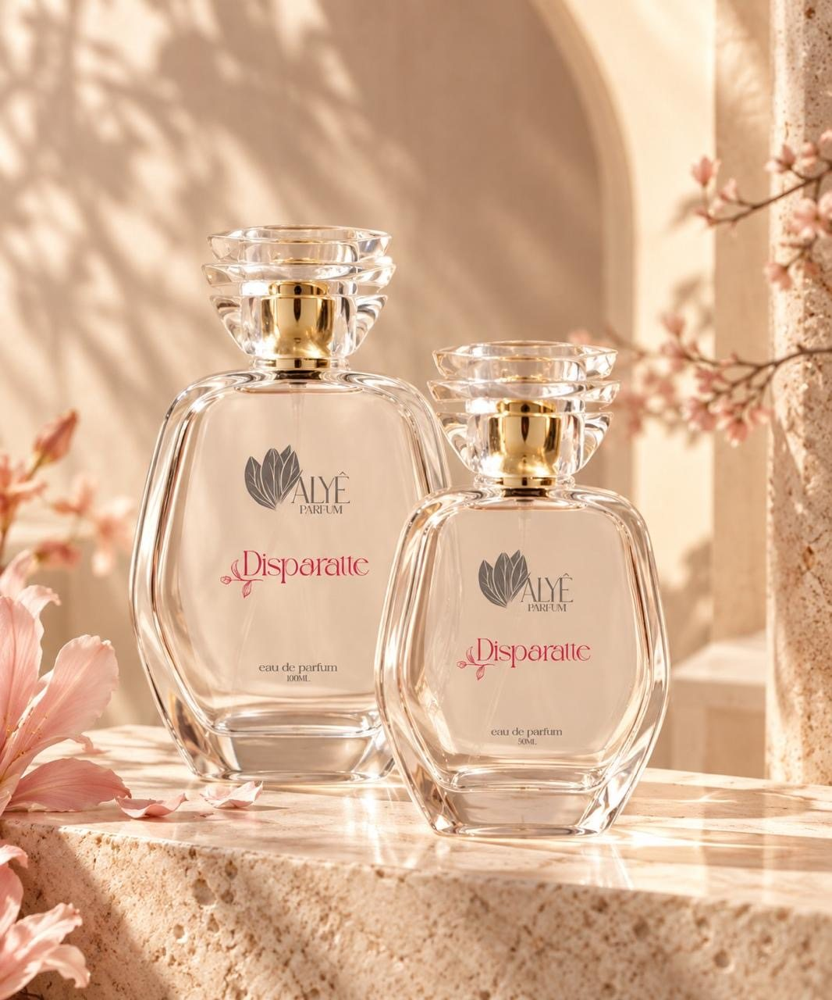
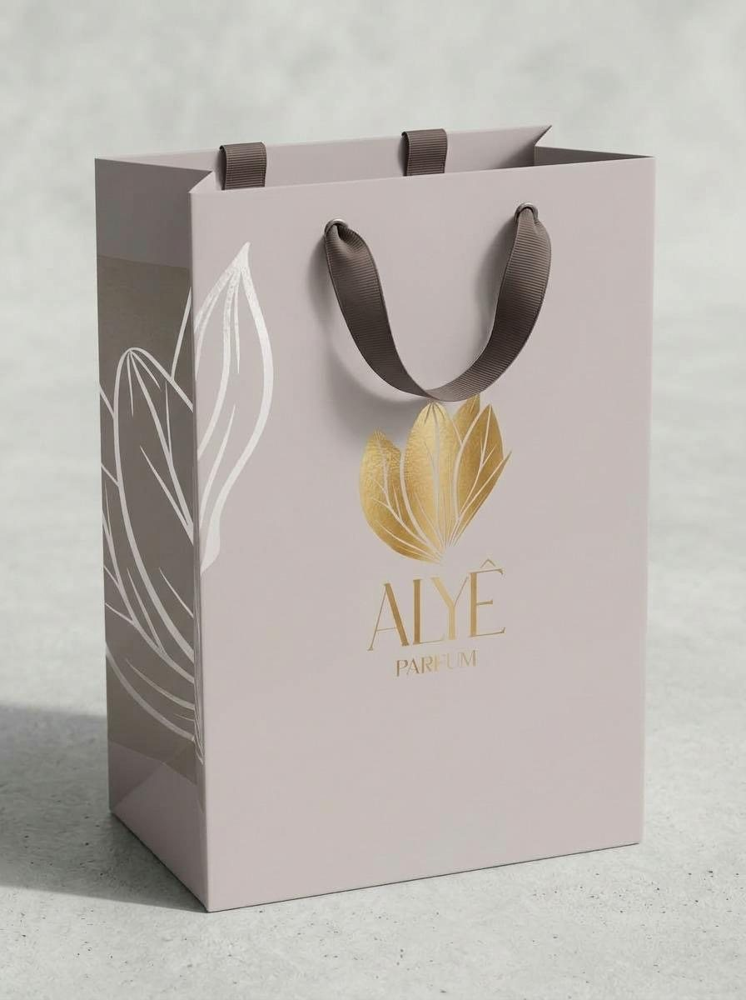
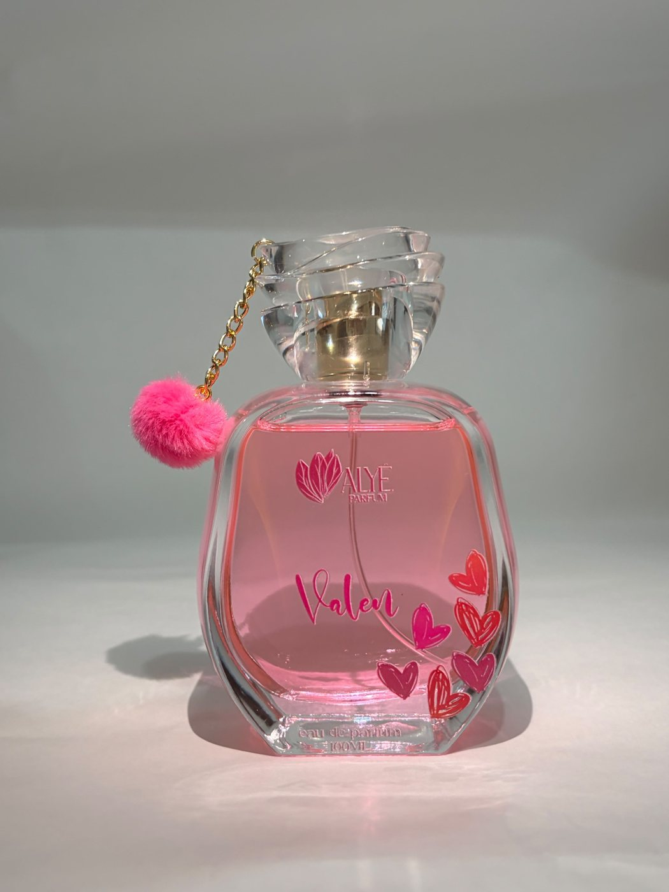
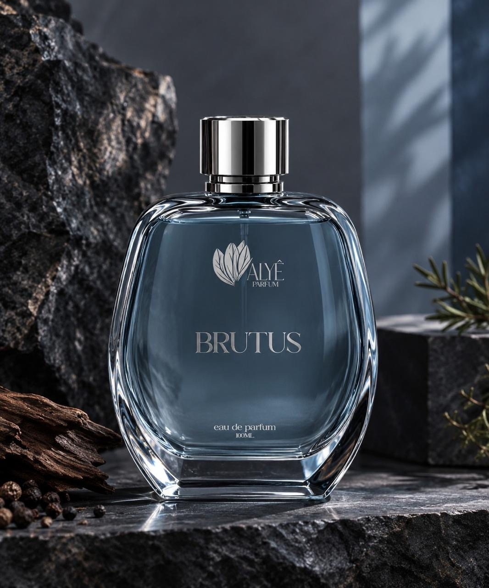
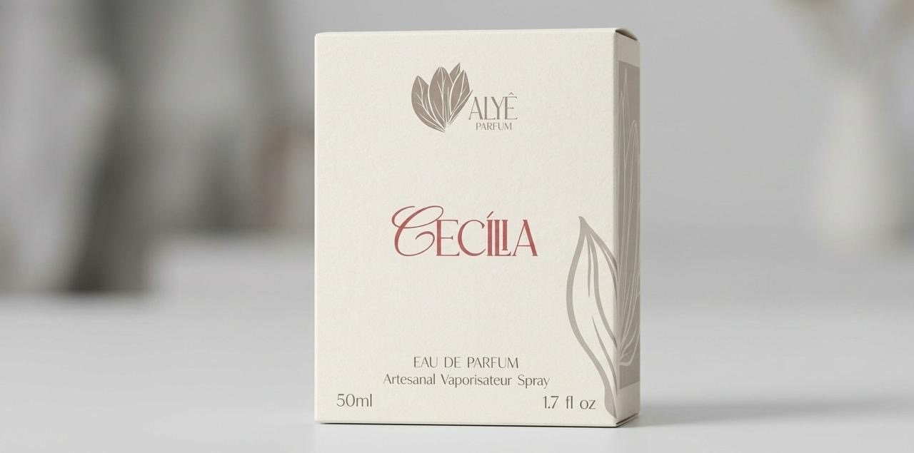
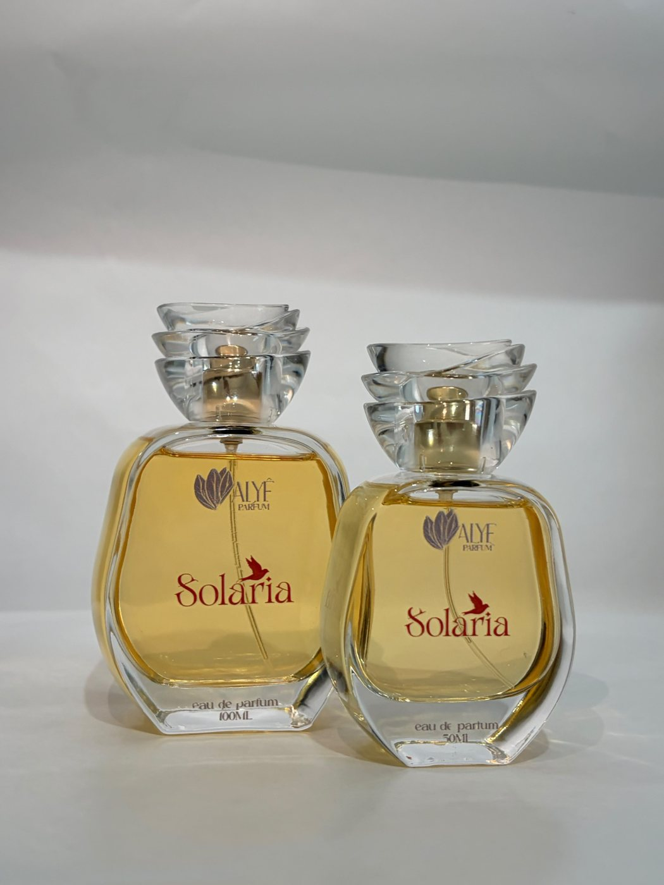
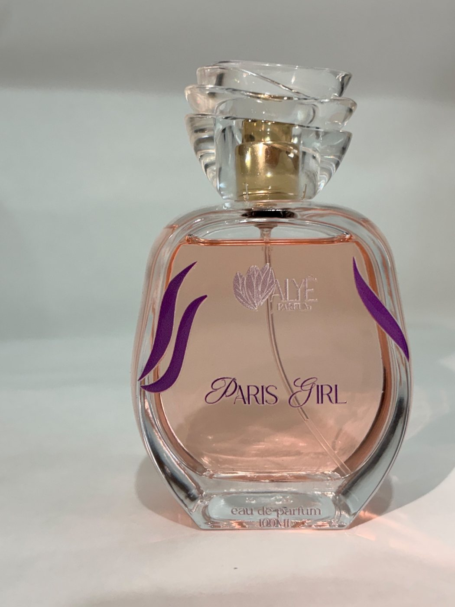
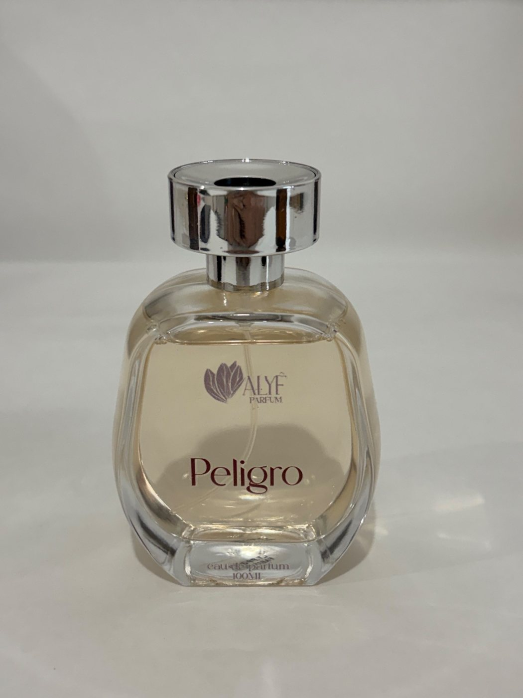
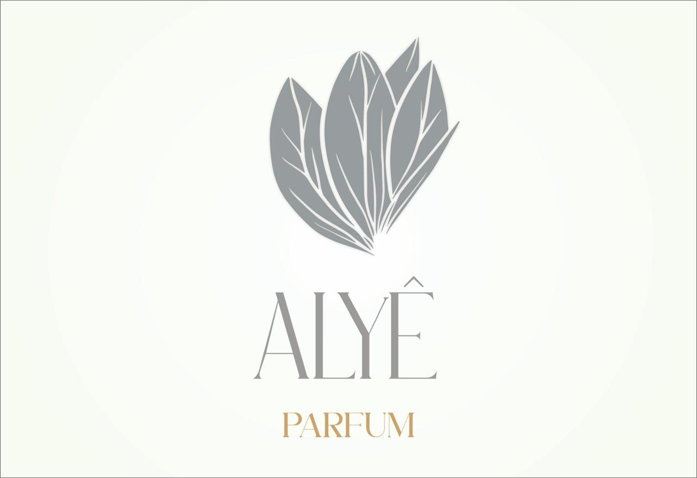

Alyê Parfum · Campanha de Natal 2026
A primeira campanha do nosso plano anual: apresentar a marca Alyê e lançar sua primeira coleção no Natal.
Wallan Estúdio · Produção audiovisual · Wallan Ataíde

O objetivo
01
A Alyê ainda não é conhecida. O Natal é a vitrine para mostrar quem ela é: elegante, artesanal, feita para presentear.
02
Apresentar os sete lançamentos juntos, cada um ligado a um perfil de pessoa.
03
Com a marca conhecida, os revendedores chegam mais fácil. Fotos e artes já ficam prontas para essa próxima etapa.
Como a marca chega ao público
01
Expectativa · até 03/12
O vídeo de expectativa, já pronto, mostra só as sombras dos frascos, sem revelar a coleção. Ele funciona como convite para o lançamento.
02
Lançamento · 03/12
Coquetel de lançamento da marca Alyê. É o momento em que a coleção é revelada.
03
Campanha · 04 a 24/12
Com a marca apresentada, entra a campanha de Natal: vídeo, fotos e artes.
O conceito
Perfume é o presente que acompanha a pessoa todos os dias. A Alyê chega ao Natal como a marca desse presente: para cada pessoa que você ama, uma Alyê.
O fio condutor é o gesto de presentear: escolher, embrulhar na sacola dourada, entregar.

Os 7 lançamentos · 1 de 2
100 ml · 50 ml
Para a mulher que ilumina a casa: mãe, esposa.

100 ml · 50 ml
Para a namorada, a filha, a amiga romântica.

100 ml
Para ele: pai, marido, irmão. Intenso.

50 ml
Artesanal e delicado. Para madrinha, amigo secreto.
Os 7 lançamentos · 2 de 2

100 ml · 50 ml
Solar. Para quem já pensa no Réveillon.

100 ml
Para a jovem chique, que ama moda.

100 ml · 50 ml
Para quem gosta de marcar presença à noite.
Entrega 1 · Vídeo institucional · 45 s · 1 de 2
| Tempo | Cena | O que se vê |
|---|---|---|
| 0–5 s | Abertura | Luzes da árvore desfocadas. A mesa da ceia posta, velas acesas. As sacolas Alyê esperam ao lado dos pratos. |
| 5–15 s | A família | Pai, mãe e os dois filhos chegam à mesa. A menina esconde uma sacola atrás das costas; o menino carrega outra quase do tamanho dele. |
| 15–30 s | A troca | As crianças entregam os presentes. O pai abre o Brutus, a mãe abre o Disparatte. Macro do frasco na luz das velas e do borrifo no pulso. |
Entrega 1 · Vídeo institucional · 45 s · 2 de 2
| Tempo | Cena | O que se vê |
|---|---|---|
| 30–40 s | O abraço | A menina sente o perfume no pulso da mãe e sorri. O menino se joga no colo do pai. Abraço dos quatro; a câmera se afasta e mostra a mesa. |
| 40–45 s | Assinatura | Os frascos sobre a mesa, entre velas e enfeites dourados. Logo Alyê e a frase final. |
Locução sugerida: “Natal é estar junto. É lembrar de quem a gente ama. Alyê Parfum. Presentes que ficam.”
Ficha de produção · Personagens
30 a 45 anos · recebe o Brutus
Suéter ou camisa em vinho, verde-escuro ou bege, com calça escura.
30 a 45 anos · recebe o Disparatte
Vestido ou blusa em vinho, champanhe ou creme. Joias douradas discretas.
8 anos · entrega o presente à mãe
Vestido creme, vinho ou dourado. Laço ou tiara no cabelo.
4 anos · entrega o presente ao pai
Camisa clara com suspensório ou suéter liso em tom natalino.
Figurino nos tons da marca: vinho, verde-escuro, creme e dourado. Evitar preto, branco puro, estampas grandes e logos de outras marcas.
Ficha de produção · Cenário
Ficha de produção · Levantamento
| Item | Detalhe | Quem providencia |
|---|---|---|
| Sacolas Alyê | 4 na cena + 2 de reserva | Alyê |
| Brutus e Disparatte | Para a troca, com 1 frasco reserva de cada | Alyê |
| Os 7 frascos | Para o plano final na mesa | Alyê |
| Papel de seda e fita | Em vinho ou dourado, dentro das sacolas | [a definir] |
| Mesa posta | Toalha, louça, taças, arranjo e ceia cenográfica | [a definir] |
| Árvore e luzes | Luz quente, enfeites dourados e vinho | [a definir] |
| Locação | Sala de jantar com espaço para a equipe | [a definir] |
| Família | Pai, mãe, menina de 8 e menino de 4 anos | [a definir] |
| Figurino | Nos tons da marca, para os quatro | [a definir] |
| Autorização de imagem | Termo assinado por adultos e responsáveis | Wallan Estúdio |
| Câmera, luz e áudio | Equipe, equipamento e direção | Wallan Estúdio |
Ficha de produção · Dia da gravação
Entrega 2 · Fotos estratégicas
Entrega 3 · 4 artes profissionais
1
Apresentação da marca no feed (4:5): a essência, as folhas douradas, o cuidado artesanal.
2
Carrossel com a coleção completa, um frasco por página.
3
Stories 9:16: qual Alyê combina com quem você ama.
4
Arte institucional para o dia 25, com a sacola dourada.
Cronograma proposto
| Quando | O quê |
|---|---|
| 18 a 21/11 | Aprovação do conceito, do roteiro e dos perfis de presente |
| Até 03/12 | Teaser de expectativa no ar, como convite para o lançamento |
| 24 a 26/11 | Diária de gravação do vídeo e sessão de fotos |
| 27/11 a 02/12 | Edição do vídeo, tratamento das fotos e criação das artes |
| 03/12 | Coquetel de lançamento da marca Alyê |
| 04 a 24/12 | Campanha de Natal no ar, com pico entre 15 e 23/12 |
| 25/12 | Arte institucional de Feliz Natal |
Para começar
Natal Alyê 2026
Wallan Ataíde · Wallan Estúdio
(84) 98779-5227
wallanataide@gmail.com
@wallan_estudio
